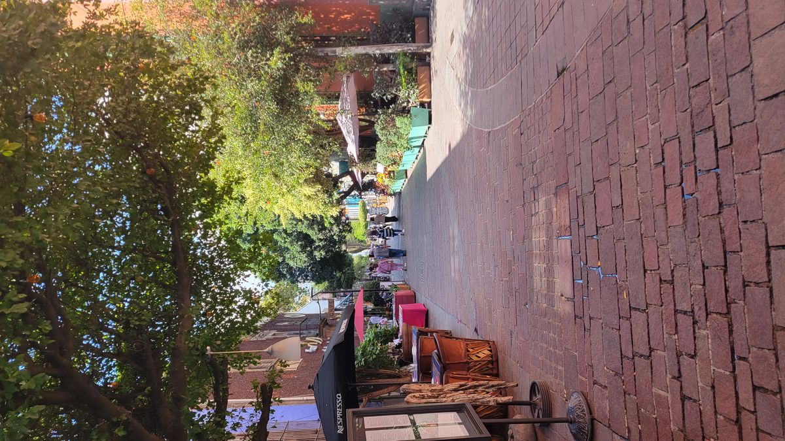
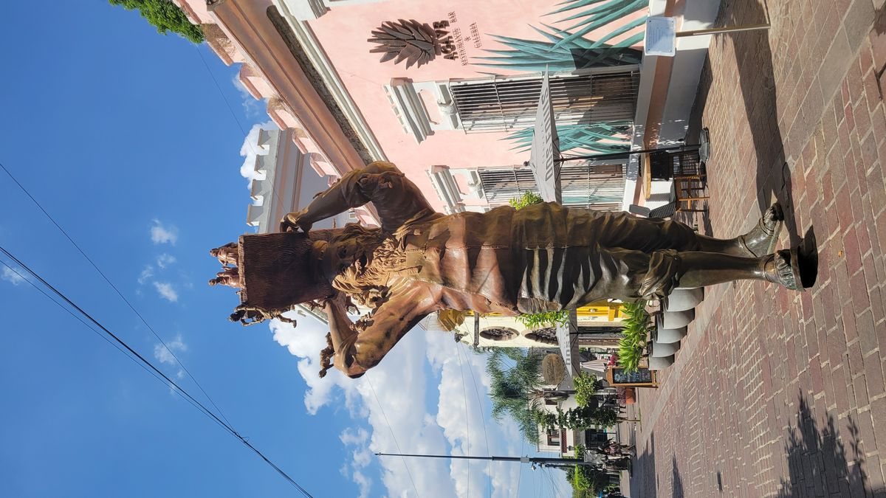
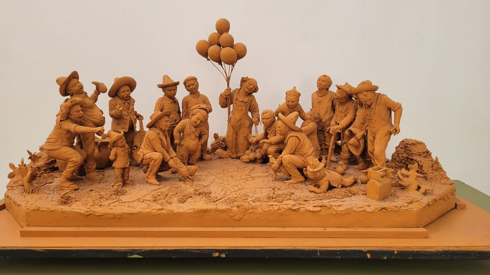
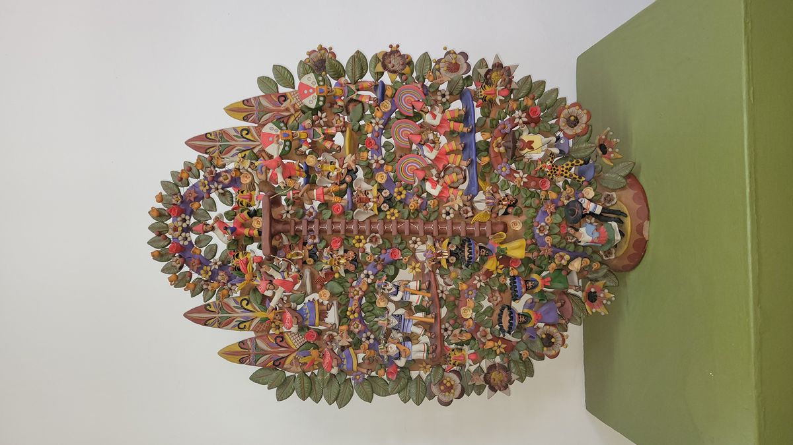
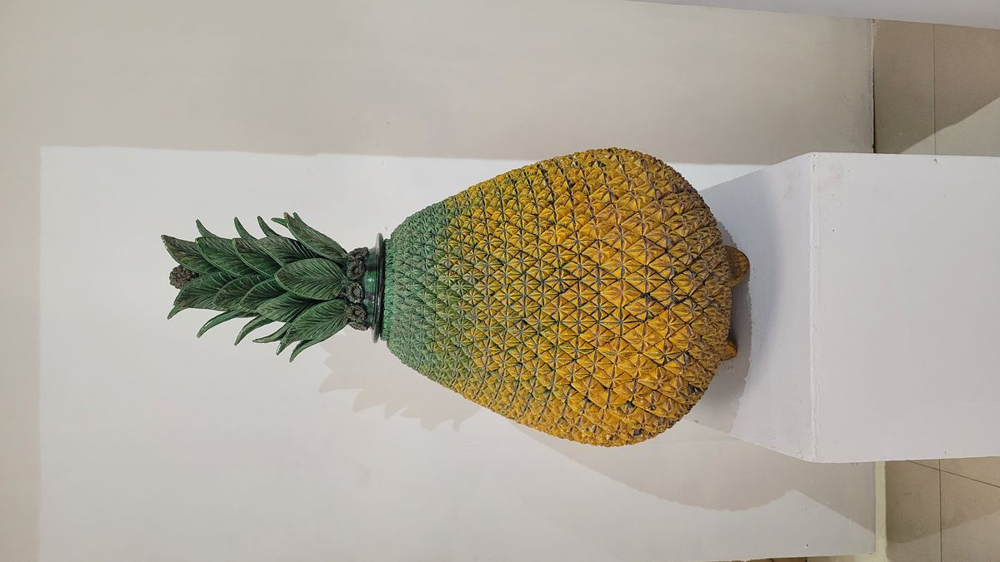
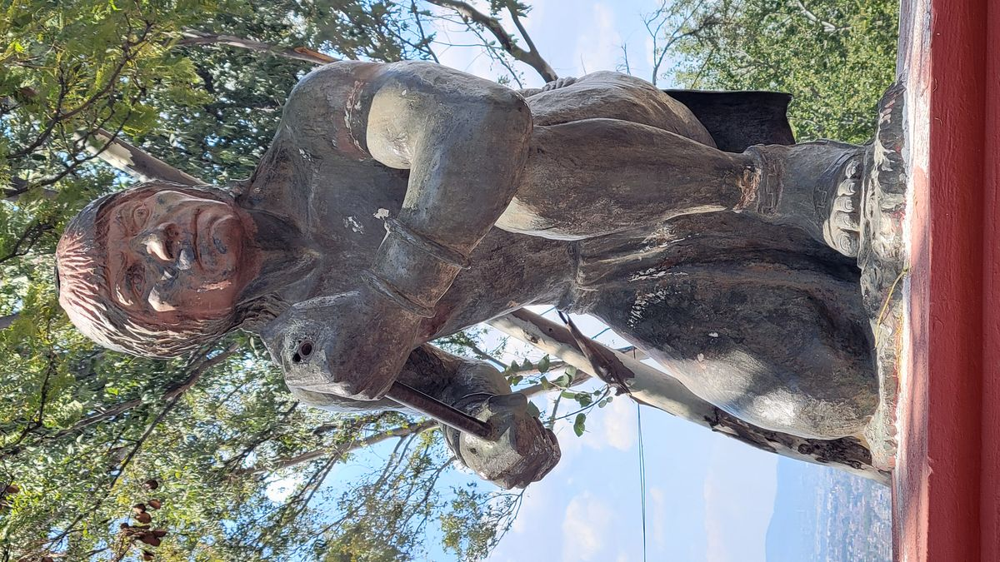
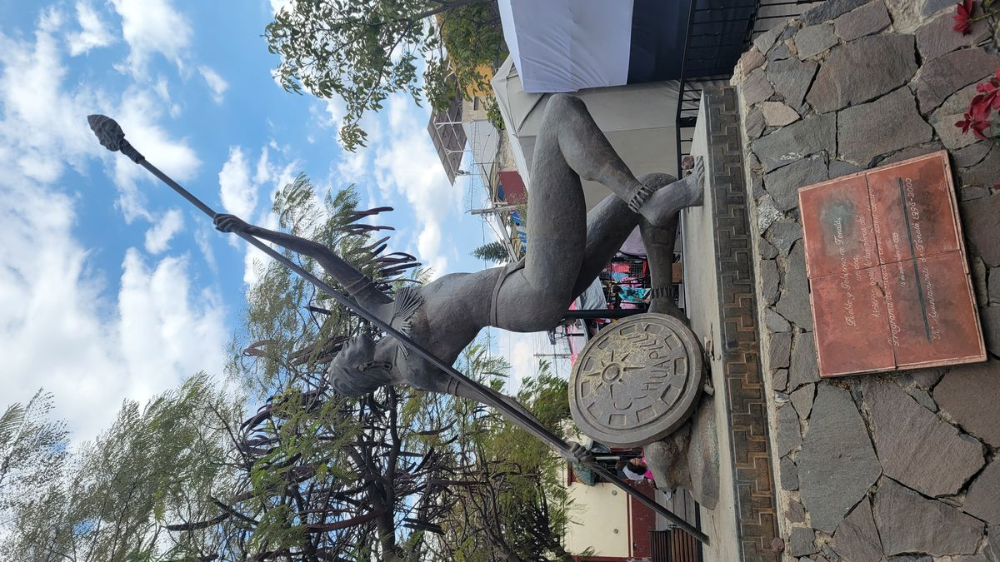
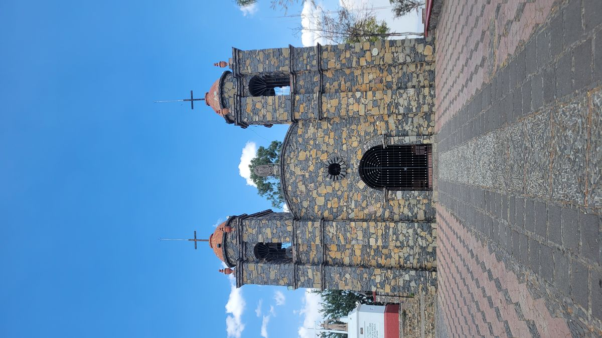

Tlaquepaque
On the edge of Guadalajara sits the pueblo of Tlaquepaque (Tla-Keh-Pa-Keh). A popular day trip for all visitors to Guadalajara, the colorful streets are filled with the smells of restaurants and the sounds of Mariachis. Like so many other Pueblo Magicos, store fronts are filled by local artisans, here specifically, for ceramics and sculpture. The city also hosts the Regional Ceramics Museum, dedicated to preserving the indigenous traditions of the Jalisco state.
I arrived late in the morning and the streets were already teeming with visitors. It was the Friday of a holiday weekend in México (dia del Constitution) and everyone seemed eager to start the festivities. After grabbing my 2nd morning coffee I wandered the cobblestone streets, browsing the wares of the local artisans. I don’t doubt the quality and craftsmanship of the items being sold, but the prices were real and reflected the work. If you’re in the market for high quality and authentic Mexican crafts, Tlaquepaque is a great place to be.


I found myself outside the regional ceramics museum and since it is always free I signed the guestbook and walked inside. I found dozens of pieces from Tree's of Life, dioramas and traditional pottery. 45 minutes in the museum and I was pleased with the works I saw. Exposure to these types of things is one of the reasons I’m on this trip.



I stopped for lunch at the local Market and got a few Gordittas and searched on my phone for other attractions in the area. I saw a place marker on Google Maps for a place called queens hill located a few KM in another town called Tonala. I had exhausted the unique activities in Tlaquepaque so found an uncrowded street and ordered an Uber with the destination of the hill.
Queen Tzapotzintli
Traffic was horrible because of the holiday and Tonala was holding an market that day. The Uber arrived at the bottom of the hill and the driver offered to drive to the top, but I told him it wouldn’t be necessary as I was hoping to walk the steps to the top. I paid the driver in cash and started the quick climb to the top. When I got there I found an church and some sculptures. Immediately to the left of the church was a statue of Queen Cihualpilli Tzapotzintli (please don’t ask me to pronounce that, there was no guide).
The legend is that Queen Tzapotzintli presided over a small kingdom of villages in this area. The hill I was standing housed a temple to the Sun God of her people and also served as her observatory of her kingdom. All was peaceful until 1530 when Spanish Conquistadors arrived spreading Christianity and disease.
As word spread of the forthcoming Europeans, Tzapotzintli first tried to peacefully negotiate with the invaders sending gifts of fruit and honey. They demanded more, and obedience to the Spanish King. Some people in her kingdom were starting to lose faith in Tzapotzintli ability to lead and waited at the bottom of the hill the days the Spanish arrived to their city. While Tzapotzintli wanted a peaceful solution to this ordeal, the dissidents in her tribe staged a sneak attack with bows and arrows. It was a suicide mission and all attackers were killed within hours.
Fearing more bloodshed Queen Tzapotzintli hurriedly came up with a plan for a peaceful coexistence with the Spaniards. The women of her tribe would offer themselves to the Spanish, convert to Christianity in order to live in relative peace and protect themselves from certain death. Tzapotzintli leading by example, went first, taking the name Juana Bautista Danza and was allowed to remain as the figurehead of her people.
The temple was torn down and the stones were used to rebuild the Christian church which still stands today. This desecration of indigenous sites was a common tactic used by the Spanish during the Latin American conquests.




The statue of Tzapotzintli depicts her dropping an indigenous symbol and embracing a cross marking her conversion to Christianity. She is guarded by a handful of warriors from her tribe. A statue in her indigenous attire is found in the town’s main plaza.
It’s stories like these that motivate me to travel and explore. While a place like Guadalajara was definitely on my list of places to see in my life, the pace of which I’m traveling allows me to search out these lesser-known spots in history. I never would have been able to appreciate the beautiful ceramics in Tlaquepaque, or learn about the sacrifice of Queen Tzapotzintli had I been on a more traditional schedule.